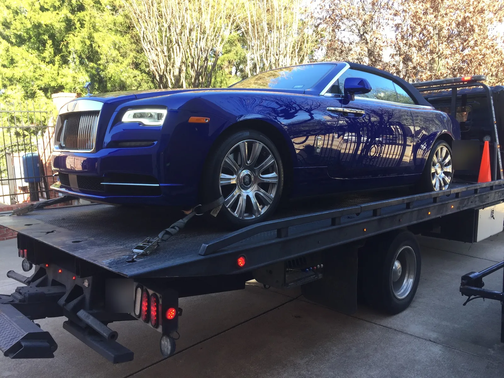
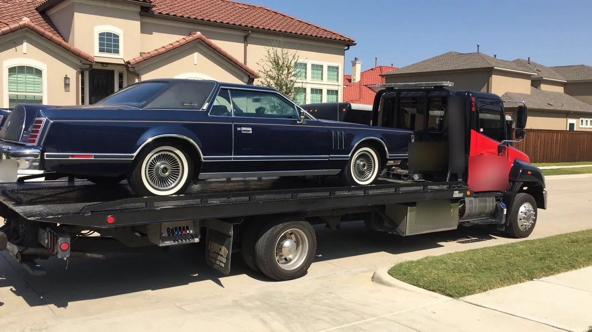
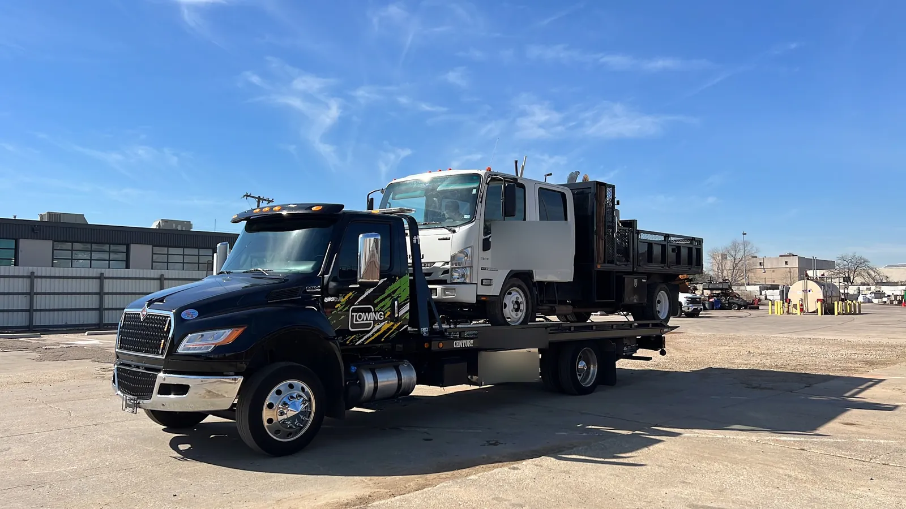

Services · Garland, TX
Car towing. Flatbed towing.
The two services Google reviewers tag most, plus what they say happens when they call.

Review tag on GoogleCar towing
Broken down in the middle of the road, at home or at a major intersection, customers describe a quick, careful tow. Where your car goes is up to you: back home, to the repair shop of your choice or to the dealership.
- “They towed it for me back to my house.”— Shantearra Cook
- “Quick to load and get your vehicle to the repair shop of your choice.”— Anthony Clark
 Review tag on Google
Review tag on GoogleFlatbed towing
A flatbed (rollback) carries the whole vehicle on its deck instead of towing it on its wheels. The job photos show low sports cars, a luxury convertible and a classic coupe strapped down this way.
- “Delivered my car to the dealership.”— Amanda Graves
- “They scooped my truck up in under 5 minutes.”— James Howe
How a call goes
From the shoulder to the shop.
Four stops, each one described by a real customer. A general outline, not a promise.
Call
Call (469) 756-9818. Customers single out the person on the phone: “man who was over the phone is the goat.”
— jaye, Google review
Get an ETA
You get an estimate before the truck rolls. “Gave me an ETA of an hour and showed up in 30 mins.”
— Gwendolyn Thomas, Google review
Hook up & load
The driver loads the vehicle, safety first. “Driver was safety first but understood the urgency.”
— James Howe, Google review
Delivered
Home, a repair shop of your choice or the dealership. “Got the job done hassle free!”
— Amanda Graves, Google review
From the job photos
More than cars on the deck.
Their photos also show these loads and trucks. They aren’t on an official service list, so call and describe what you need moved.


What customers mention
The little things people remember.
From individual Google reviews, not a menu of guaranteed services.
A jump to rule out the battery
“He even jumped my car to make sure it was not a battery issue.”
— Chelsea Coulter, Google review
Insurance-arranged tows
“My insurance company contracted [them] after another towing company cancelled the tow job.”
— Chelsea Coulter, Google review
Updates you can see
“They even sent me a picture of it closed when they left.”
— Amanda Graves, Google review
Options, not pressure
“Gave you options on how to deal with your troubled car.”
— Cesar Robles, Google review

Need a tow right now?
Car and flatbed towing out of Garland. Call (469) 756-9818 for a live ETA.
Hours: Mon–Tue 6 AM–12 AM CT